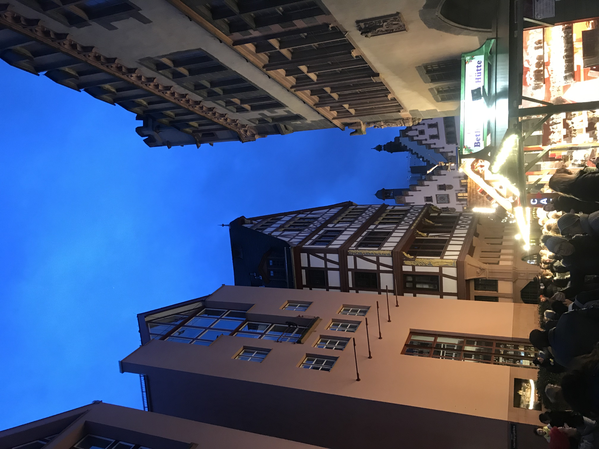
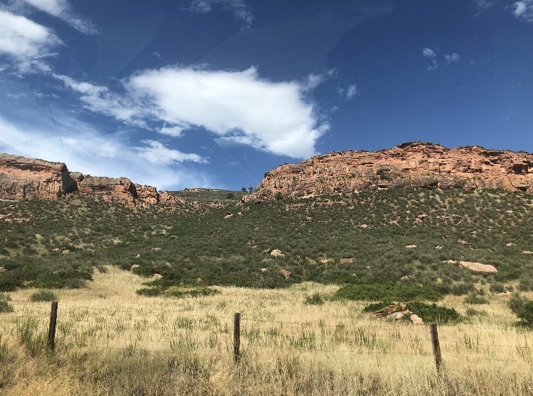
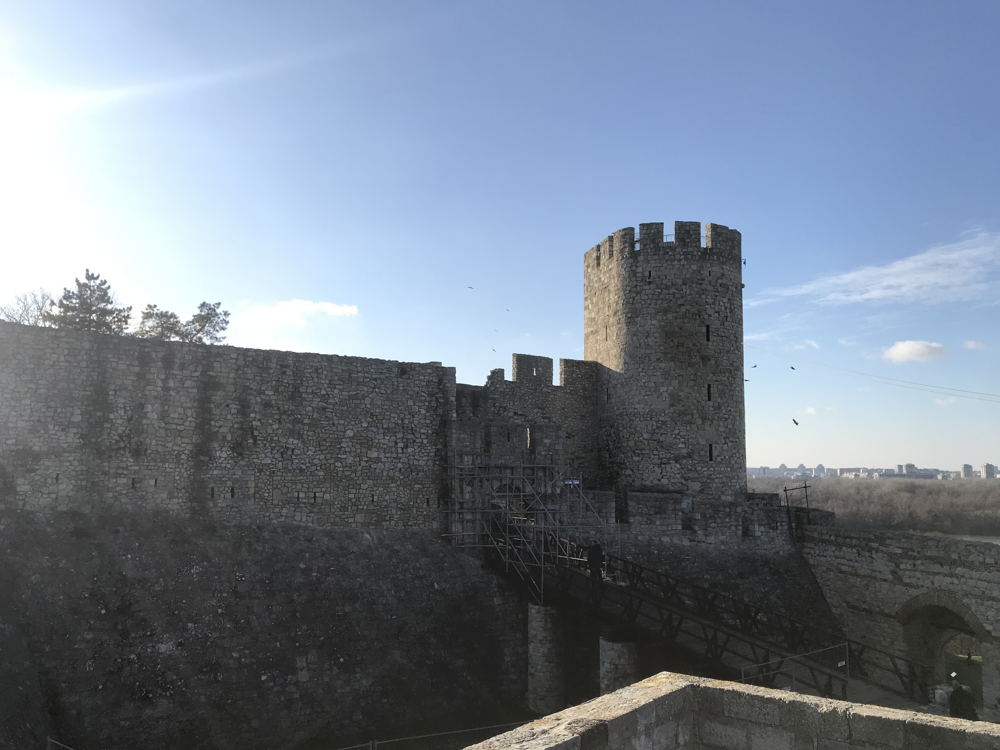
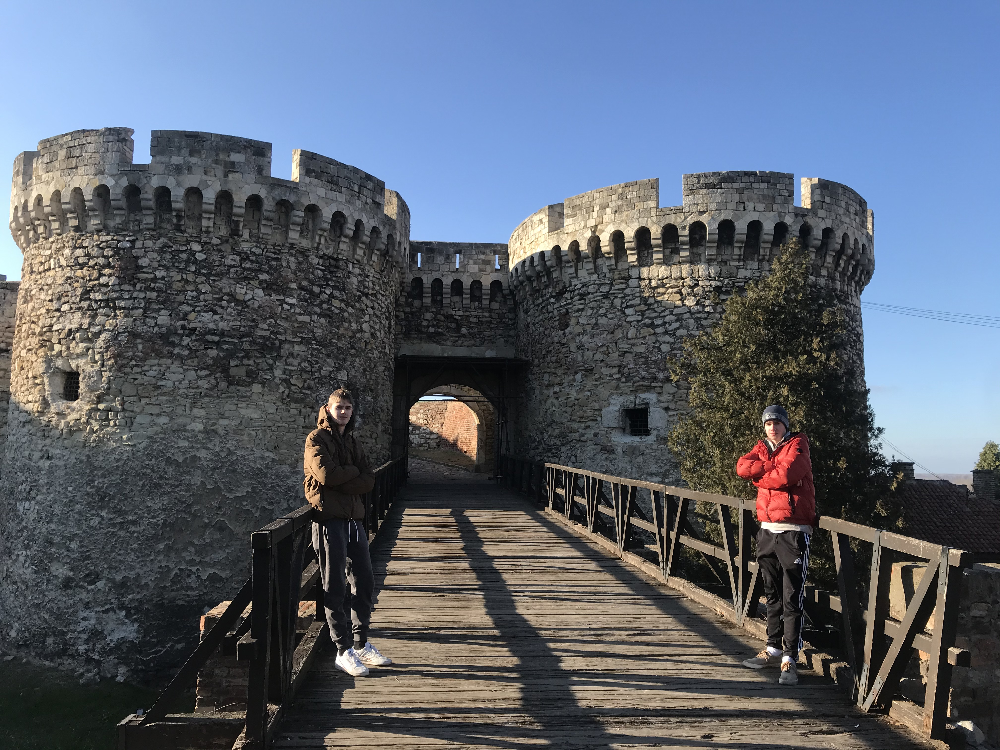
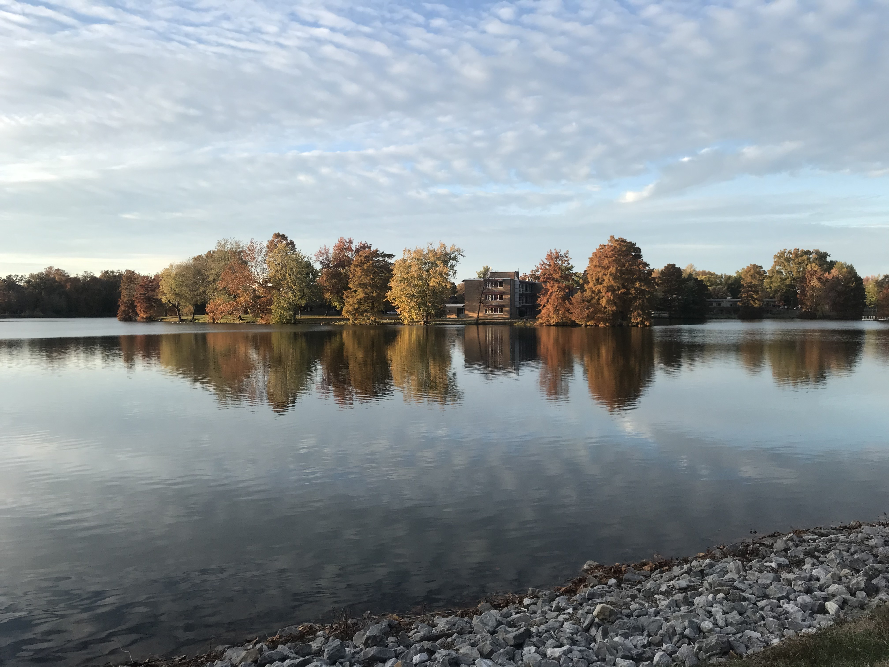

Travels 'n stuff
During my time in Frankfurt, I often took long walks in the city. Pictured right is the style of the buildings. Notice the difference in building design compared to the United States.


Summer in Colorado can be a very great time. During my time in Colorado, I took this picture of a rocky hill. The closer you get to the 'wild west', the more you see dry hills. This is because the climate is different than the east coasts'
During my time in Serbia, I went to the capital city Belgrade. One particular thing that I enjoyed was learning about the historic fortresses. The wall pictured right was built in 259 BC and is still standing.


Just like the previous caption, this castle has been up for over 2,000 years. Pictured is my brother (L) and me (R).
Last but not least, what better vacation is there than a walk around the SIUC campus lake?
